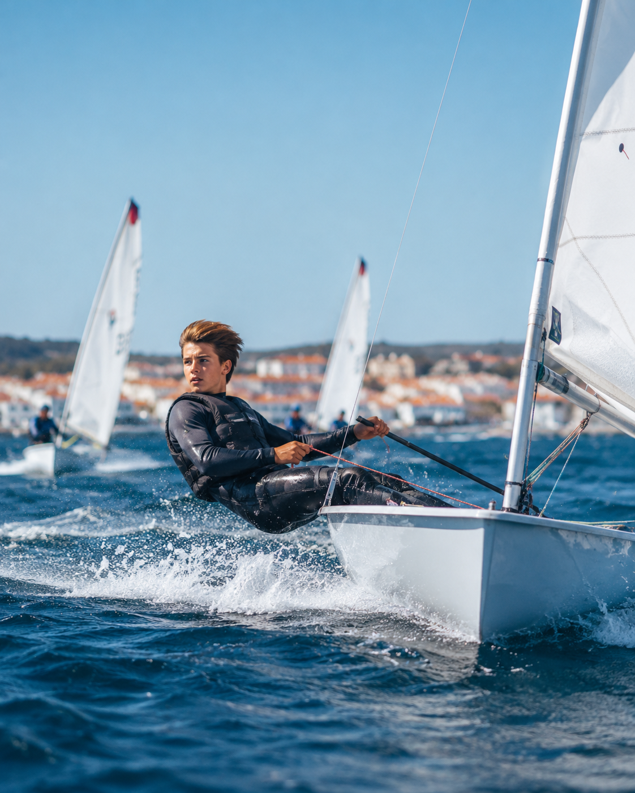
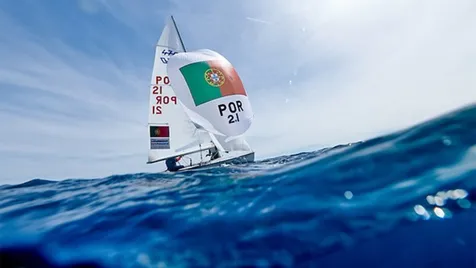
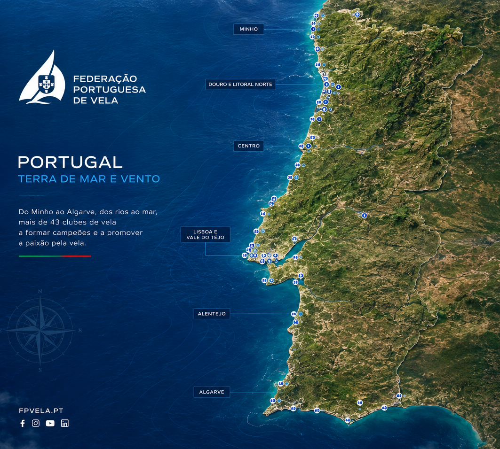

Federação Portuguesa de Vela
Portugal
Portugal
navega aqui.
Um país de mar. Um desporto para todos. Da primeira experiência à vela de alto rendimento.

Da descoberta à competiçãoO horizonte é só o início.↗
Alto Rendimento
Portugal
Explorar Alto Rendimento →
Portugal
no mundo.
Atletas, estrutura técnica, preparação olímpica e critérios de seleção. Uma área para acompanhar quem representa a vela portuguesa no mais alto nível.
LA28Ciclo Olímpico
FPVAtletas · Estrutura · Projeto Olímpico

Alto Rendimento FPV
LA28 · Ciclo Olímpico
Descobrir a VelaNunca velejaste?
Nunca velejaste?
Começa aqui.
A vela deve ser fácil de descobrir. Criámos percursos claros para crianças, adultos e famílias.
Formação
Mais conhecimento.
Mais conhecimento.
Melhor vela.
Uma área dedicada a treinadores, árbitros, oficiais e agentes desportivos, com cursos, certificações e calendário num único lugar.
Clubes
O mar
O mar
mais perto.
Encontra clubes, escolas de vela e estruturas de formação por região.
Encontrar um clube ↗